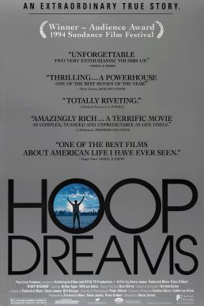

제가 꼽은 인생 영화를 소개합니다.
| 순위 | 영화 정보 | ||
|---|---|---|---|
| 제목 | 포스터 | 명대사 | |
| 1 | Hoop Dreams |  | An Extraordinary True Story. |
| 2 | The Hunted | |
He's trapped in a world where killing is an art and revenge is an obsession |
| 3 | Forrest Gump | |
The world will never be the same, once you've seen it through the eyes of Forrest Gump. |
영화 상세 정보(위키피디아KR)